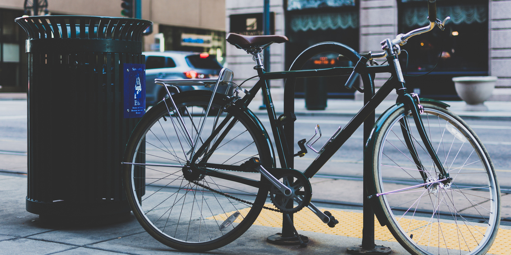

When you combine the cost of a new car, insurance, gas and maintenance, you can expect to spend an average of $8,469 per year to own and operate a vehicle according to AAA’s recent evaluation, with costs above $10,000 for larger trucks.
Even if you get a nice bike and decent gear, annual costs to commute to work as a cyclist will average about $350–$500. Year after year, this adds up to some pretty significant savings.
Sure, most of us will probably still own at least one car. And while that means insurance costs, if you ride your bike most of the time and can keep your annual car mileage in the 5,000 range, you can save big with reduced rates from most car insurance companies. You can also opt for a pay per mile auto insurance plan if you plan to use your vehicle less than 10,000 miles per year.
If you live or work in an urban area, then you know what a nightmare parking can be — not to mention how much damage it can do to your wallet day after day. One of the great things about commuting by bike is that you can park pretty much anywhere. In some situations, you may even be able to take your bike inside with you. And the best part is, no matter where you park your bike, it’s free.
